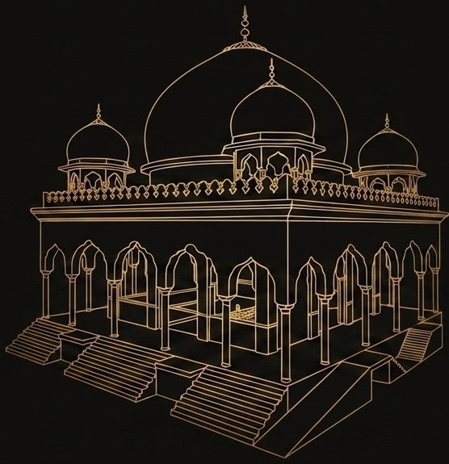

One chain, carrying four inheritances. Silsila-e-Saifia an Islamic Sufi order following Hanafi Madhhab founded by Hazrat Peer-e-Archi Akhundzada Saif-ur-Rahman Mubarak (R.A.)
Origins
A Gathering of Rivers
سلسلہ سیفیہ
Silsila-e-Saifia
For centuries, the great Sufi orders of Islam — Naqshbandiyya, Qadiriyya, Chishtiyya, and Suhrawardiyya — developed along distinct paths, each carrying its own methods of remembrance, discipline, and spiritual training. Silsila-e-Saifia is where these four rivers meet.
Founded by Hazrat Peer-e-Archi Akhundzada Saif-ur-Rahman Mubarak (R.A.), the order was established not to replace these paths but to unite them — offering a single chain of transmission through which a seeker may draw on the full breadth of Sufi tradition, grounded firmly in the Hanafi school of jurisprudence.
النقشبندية
Naqshbandiyya
The Naqshbandi order traces its silent, heart-centered method of remembrance back through an unbroken chain to Abu Bakr al-Siddiq (R.A.), the first Caliph of Islam. Known for its emphasis on inward remembrance over outward expression, discipline of the self, and closeness to the Prophetic Sunnah, it remains one of the most widely practiced Sufi paths across Central and South Asia.
الچشتية
Chishtiyya
Brought to South Asia by Khwaja Moinuddin Chishti (R.A.), the Chishti order is renowned for its emphasis on love, tolerance, and openness — expressed through practices such as sama (spiritual audition) and a deep concern for serving humanity regardless of faith or background. It remains one of the most influential Sufi orders on the subcontinent.
القادرية
Qadiriyya
Founded by Shaikh Abdul Qadir Jilani (R.A.) in 12th-century Baghdad, the Qadiri order is among the oldest and most widespread Sufi paths in the Muslim world. It is distinguished by its balance of spiritual devotion with adherence to Islamic law, and by a tradition of scholarship, humility, and service that spread the order from the Middle East to nearly every corner of the Islamic world.
السهروردية
Suhrawardiyya
Established by Shaikh Shihabuddin Suhrawardi (R.A.), the Suhrawardi order is marked by its rigorous integration of Islamic jurisprudence with spiritual training, producing scholars and saints who bridged the outward sciences of Islamic law with the inward sciences of the heart. Its influence spread through Persia, Central Asia, and the Indian subcontinent.

The path
چار سلسلے
Four inheritances, one chain
Most orders trace authority through a single line. Sarkar Mubarak held khilafat in more than one, and the training he left draws on four. A Saifi disciple inherits all of them at once.
النقشبندية
Naqshbandiyya
The primary root, through its Mujaddidi branch from Ahmad Sirhindi. Silent remembrance, sobriety, and attention held in the breath.
القادرية
Qadiriyya
From Abdul Qadir Gilani. Sarkar Mubarak received khilafat in this line through Sheikh Haji Pachero.
الچشتية
Chishtiyya
From Moinuddin Chishti. Love taken as method, and remembrance that is heard as well as held.
السهروردية
Suhrawardiyya
From Shihab al-Din Suhrawardi. Service, discipline, and the ordered rule of the khanqah.
The four do not compete for the disciple. They are gathered, and handed on together.
The Light
اَللّٰهُ نُوْرُ السَّمٰوَاتِ وَالْاَرْضِ
Allah is the Light of the heavens and the earth. The likeness of His Light is a niche, and within it a lamp; the lamp in glass, the glass as though it were a shining star.
Surah an-Nur 24:35
لطائف
The five subtle centres
Naqshbandi masters describe faculties within the person, each with its own seat and its own light. Under a shaykh's direction the disciple's attention rests on one, then moves to the next, in order. Followers of Sarkar Mubarak knew him for this work above all.
قلب
Qalb — the heart
Seattwo fingers below the left breast
Colouryellow
Attributed toAdam
Where the work begins. Remembrance is placed here first and held until it continues without the disciple's effort.
The five belong to the ʿalam al-amr, the world of command. Beyond them the disciplines continue through the nafs and the four elements to sultan al-adhkar — remembrance in the whole body, no part of it left outside.
Read before practising
Seats and colours follow the Mujaddidi scheme, and branches differ on the order of the last two. Nothing set down here replaces a shaykh's instruction, and the lataif are not taken up without one.
Daily
معمولاتِ سیفیہ
Mamulat-e-Saifia
What a Saifi disciple is asked to keep, from the last third of the night through the rest of the day.
Last third of the night
مراقبہ
Muraqaba
Fifteen to thirty minutes of silent sitting after Tahajjud. The nafs is brought under inspection and measured against what has been commanded — not an emptying of the mind, but an accounting.
Silent, in the heart
ذکرِ قلبی
Qalbi zikr
Remembrance placed in the heart rather than on the tongue. Nobody beside you hears it. This is the Naqshbandi mark, and the reason a room of Saifi salikeen at zikr can be almost quiet.
فجر
Fajr — the light arrives
With the shaykh
رابطہ
Rabita
An inner connection kept with the shaykh, living or departed, through which guidance is understood to pass. Held quietly through the day's ordinary work.
Every day, without missing
سلسلہ و مناجات
Silsila and Munajat
The chain of masters recited from the present back to the Prophet ﷺ, and supplication after it. The disciple says the names daily so as to stand in a line rather than alone.
At the khanqah
مجلسِ ذکر
Majlis-e-zikr
Gathered remembrance, held together. Followers describe states of wajd in these sittings under Sarkar Mubarak. Times are set by each centre.
The founder
اخوندزادہ پیر سیف الرحمٰن مبارک
Sarkar Mubarak
20 Muharram 1344 · 10 August 1925 — 14 Rajab 1431 · 27 June 2010
He was born in Baba Kalai, a village some twenty kilometres from Jalalabad, and had the Qur'an from his father. In the early 1940s he went to Peshawar for tafseer, hadith, usul al-fiqh, aqeeda and tajweed. He was around thirty when he gave bay'ah to Shah Rasul Thaqalayni and was set to silent remembrance.
Maulana Muhammad Hashim Samangani completed that training and granted him autonomous khilafat. He taught in Archi and left Afghanistan before the war reached it. In Bara he built a masjid, a Dar-ul-Ulum and a khanqah — and that is counted as the founding of the Saifia. He held to one condition throughout: the Sunnah first, and no spiritual practice standing apart from it.
1344 AH · 1925
Baba Kalai
Born near Jalalabad. First instruction, and the Qur'an, from his father.
Early 1940s
Peshawar
Formal study in tafseer, hadith, usul al-fiqh, aqeeda and tajweed.
c. 1955
Bay'ah
Allegiance to Shah Rasul Thaqalayni, and initiation into silent dhikr.
1387 AH · 1967
Khilafat
Granted autonomously by Muhammad Hashim Samangani. Separately, khilafat in the Qadri line through Sheikh Haji Pachero.
Before 1978
Archi
A mosque and Dars-e-Nizami in Afghanistan — from which the name Peer-e-Archi.
1978
Pir Sabaq
Left Afghanistan ahead of the war. Three years of guidance here.
1409 AH · 1989
Bara
Masjid, Dar-ul-Ulum and khanqah — the founding of the Silsila-e-Saifia.
1431 AH · 2010
Ravi Rehan Shareef
Died 14 Rajab. The order's khanqah stands here, outside Lahore.
Sarkar Mubarak
The blessed master. The name most used among salikeen.
Peer-e-Archi
For the district in Afghanistan where he first taught.
Shah-e-Khurasan
King of Khurasan — the old name for the country he came from.
Hazrat Sahib
How he was addressed inside the khanqah.
Recited daily
سلسلۂ ذہب
The Golden Chain
Authority in a Sufi order rests on transmission — an unbroken line of masters reaching back to the Prophet ﷺ. Saifi disciples say it every day, and follow it with munajat.
Muhammad ﷺ
Abu Bakr as-Siddiqرضی اللہ عنہ
Salman al-Farsiرضی اللہ عنہ
the chain continues
Bayazid al-Bastami
Abdul Khaliq Ghijduwani
Baha-ud-Din Naqshband Bukharifrom whom the order takes its name
Ahmad SirhindiMujaddid Alf-e-Thani
the chain continues
Shah Rasul Thaqalayni
Muhammad Hashim Samangani
Saif-ur-Rahman MubarakSarkar Mubarak
The full chain
Every name, in its place, is set out in the introduction above. What's recited daily follows the same order, taught in full at the khanqah.
Where
خانقاہ
Ravi Rehan Shareef
The order's khanqah stands at Lakhoder, on the Ravi, outside Lahore. It keeps the gatherings and the founder's resting place, and it is the address for everything the order does.